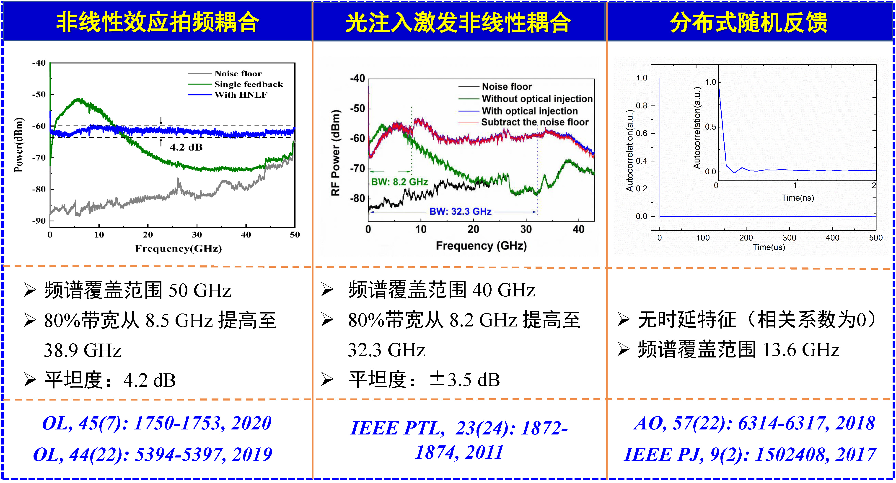
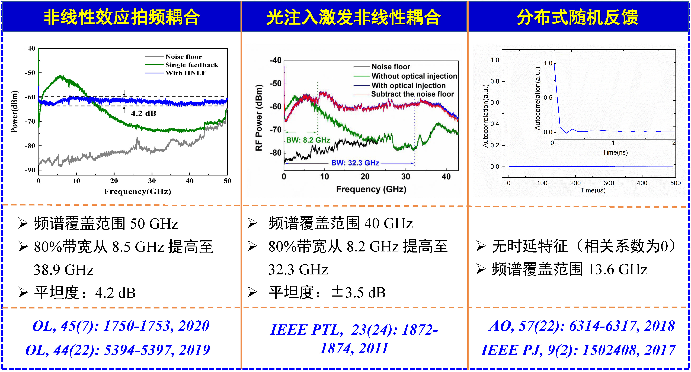
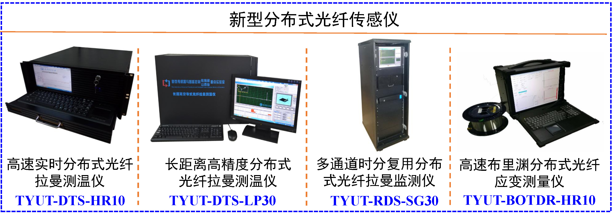

研究方向
1.宽带、无时延混沌激光的产生与器件集成
2.混沌布里渊光相干域分析技术
3.研发新型分布式光纤传感仪，应用于重大地方工程安全监测
应用领域

研究内容
一、宽带、无时延混沌激光的产生与器件集成
利用自相位调制、四波混频、交叉相位调制以及互注入拍频耦合等效应在混沌腔中激发新的光频成分，突破半导体激光器弛豫振荡频率限制，极大增强混沌激光带宽。利用光纤中的散射效应随机扰动混沌激光器谐振模式，完全消除了混沌激光时延特征。研制了宽带、无时延特征的新型光子集成混沌激光源。
 

二、混沌布里渊光相干域分析技术
提出混沌布里渊光相干域分析技术（Chaotic BOCDA），宽带混沌激光自相关特性克服声子寿命对脉冲宽度的限制，空间分辨率突破至3.5 mm；无时延混沌激光类δ函数特性消除了周期性相关峰的限制，传感距离拓展至10 km以上；Chaotic BOCDA技术打破了传统布里渊分布式光纤传感技术方案中监测距离与空间分辨率难以兼顾的瓶颈。
<
三、研发新型分布式光纤传感仪，应用于重大地方工程安全监测
以具有自主知识产权的光子集成宽带混沌激光源为核心器件、混沌分布式光纤传感为技术基础，研发四款新型分布式光纤传感仪；应用于地方重大工程健康监测，实现特长隧道火灾、高陡边坡局部垮塌、燃气管网泄露等灾害的实时监测与精准预警；依托上述研究和应用成果，起草制定地方行业标准。
